Git en Eclipse
Un poco de información..¿Que es Eclipse?
Para poder elaborar una aplicación es necesario utilizar una serie de herramientas que nos permitan escribirla, depurarla, traducirla y ejecutarla. Este conjunto de herramientas se conoce como entorno de desarrollo integrado, o IDE, y su función es proporcionar un marco de trabajo para el lenguaje de programación.
La selección y una utilización óptima de los entornos de desarrollo será una decisión muy importante en el procedimiento de creación de software. El entorno de desarrollo es la herramienta con la cual el programador tendrá que trabajar durante la mayor parte de tiempo que dedique a la creación de nuevas aplicaciones.
Una vez que se domine las facilidades que ofrezca el entorno, se podrá optimizar el tiempo de desarrollo de software y facilitar la obtención de un producto de calidad.
Instalación
Primero debemos instalar el plugin de git en nuestro Eclipse. Para ello debemos buscar el plugin en el marketplace de la página de eclipse y seguir las instrucciones para añadirlo. Para añadirlo simplemente debemos abrir en la parte superior el menú “help” y seleccionar “install new software“.
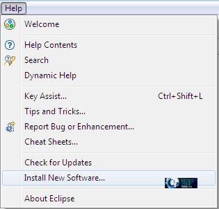Desde aquí debemos añadir el repositorio del marketplace que incluye los plugins. Para ello debemos pulsar sobre el botón “Add” y añadir en la ventana que aparece el siguiente repositorio.
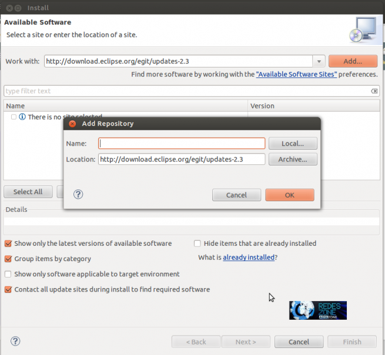A continuación nos aparecerán los plugins disponibles. Seleccionaremos el paquete “Eclipse Git Team Provider” y pulsamos sobre next.
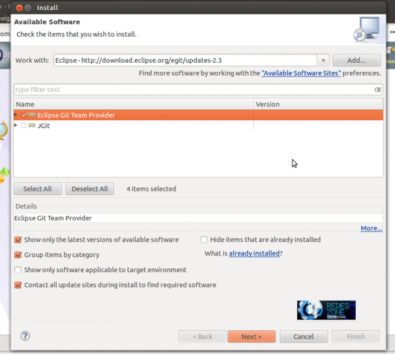Se descargarán los archivos necesarios para poder usar Git desde nuestro eclipse. Tras la descarga e instalación automática del plugin nos pedirá reiniciar Eclipse. Lo reiniciamos y ya tenemos nuestro IDE listo para ser usado con Git
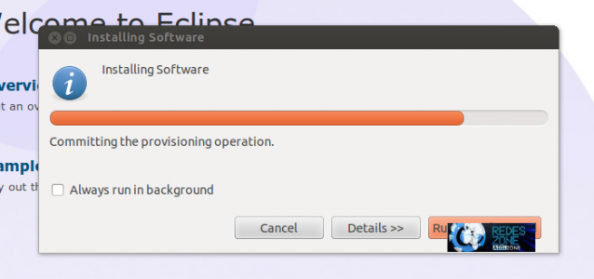Configuración
Una vez reiniciado Eclipse debemos conectarnos a nuestra cuenta de Git para empezar a utilizarlo. Para ello debemos seleccionar el menú “Window” y allí la opción Preferences. Una vez allí debemos situarnos en Preferences > Team > Git > Configuratio
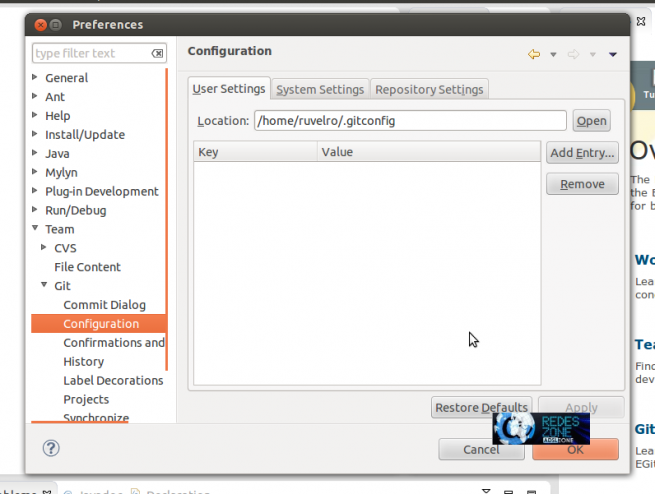Una vez allí seleccionamos “Add entry” y debemos introducir los valores user.name y user.email para identificarnos
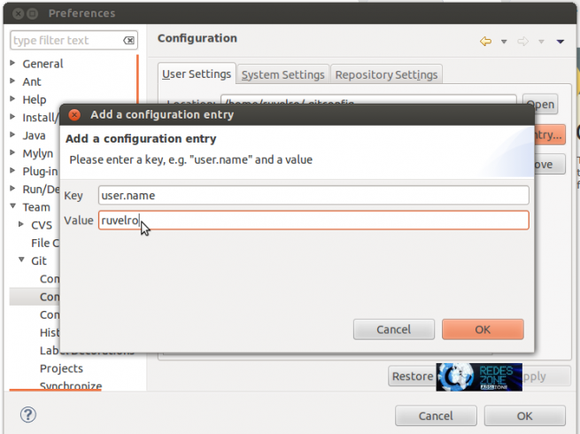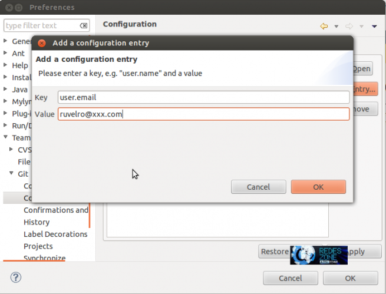Una vez hechos estos pasos ya tenemos nuestro Eclipse listo para programar en equipo y con control de versiones, tanto para crear proyectos nuevos como para abrir los ya existentes.
Primeros pasos...
Abrimos Eclipse y creamos un nuevo Proyecto web estático y lo llamaremos HTMLEclipse.
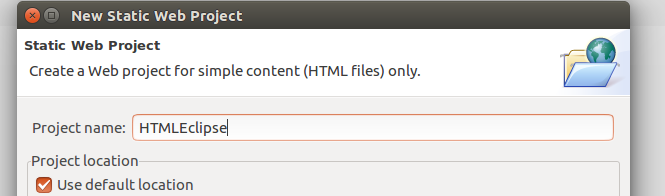Una vez creado, nos situamos encima de él, botón derecho, Team → Share Project ... Nos saldrá una ventana como la siguiente para configurar el Repositorio Git. Clickamos la casilla Use or create repository in parent folder or project y elegimos el proyecto que hemos creado anteriormente. Posteriormente, pulsamos el botón de Create Repository.
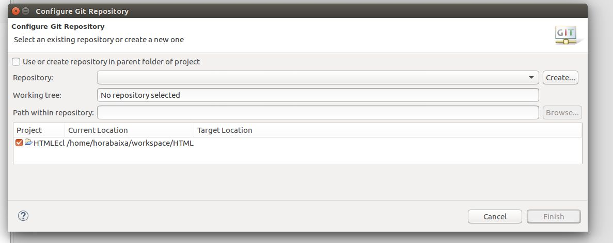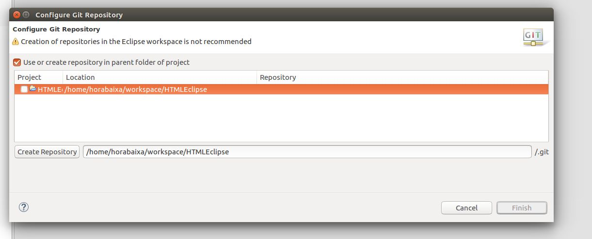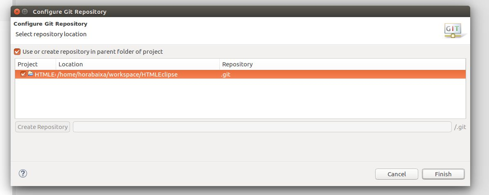Una vez acabado lo anterior, nos dirigimos a la página oficial de git, y creamos un Repositorio nuevo. Pulsamos en el “+” y seleccionamos New repository.
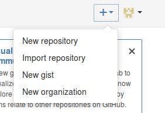Le damos el nombre de How to. Lo creamos.
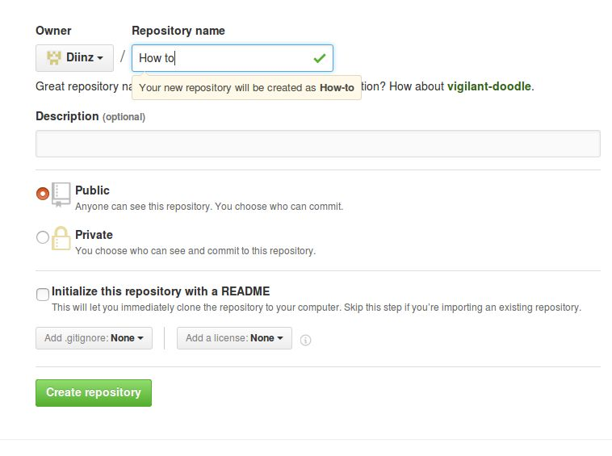Copiamos el enlace seleccionado en la siguiente imagen y nos dirigimos al Eclipse.
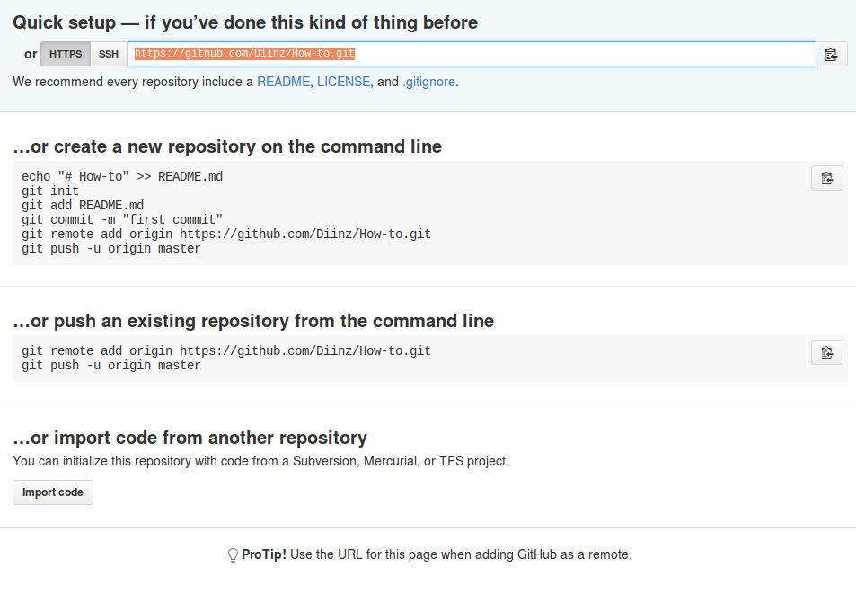Arriba a la derecha encontraremos un icono para abrir otras perspectivas, lo pulsamos y seleccionamos la opción de Git. Haremos un commit inicial para iniciar el proyecto. Arrastramos un archivo aleatorio que encontremos en Unstaged Changes y lo arrastramos a Staged Changes. Una vez hecho esto, pulsamos el botón Commit.
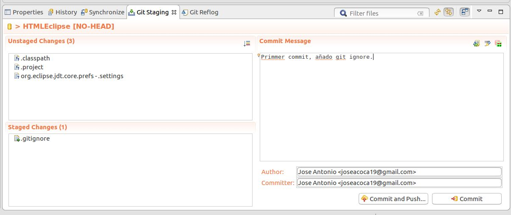Una vez hecho esto, nos situamos encima del proyecto, botón derecho, Remote → Push ... Pegaremos el enlace anterior y pondremos nuestro usuario y contraseña. Pulsamos en Next> .
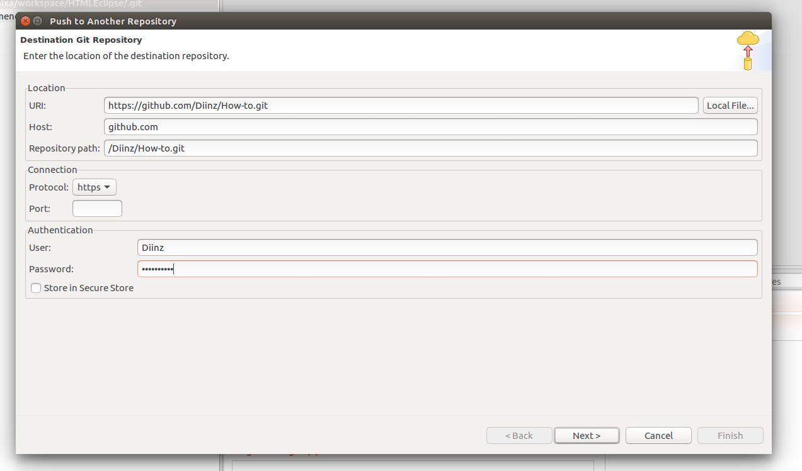Pulsamos en Source ref: y escogemos master. y Pulsamos en +Add Spec. Y finalizamos en el botón Finish.
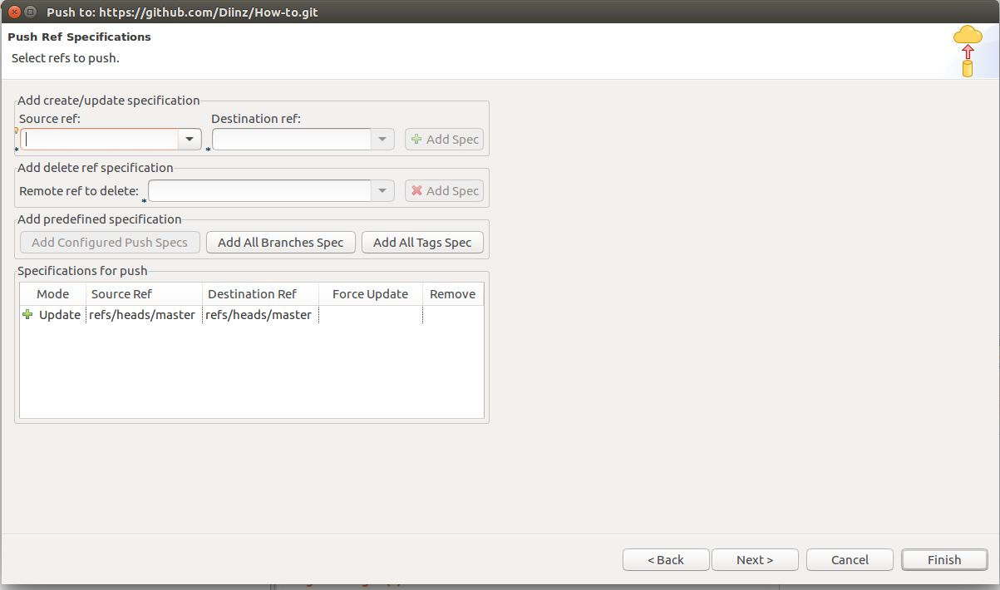Una vez acabado esto, descargamos un git ignore para ignorar archivos innecesarios. Google → Git ignore Eclipse. Clickamos en la primera opción y descargamos el archivo.
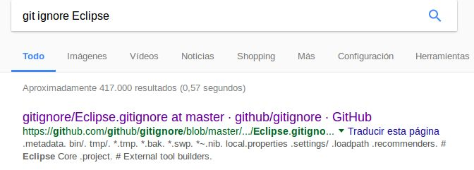Creamos un archivo .gitignore dentro de nuestro repositorio git y copiamos el archivo descargado. Cerramos Eclipse para que surtan efecto los cambios.